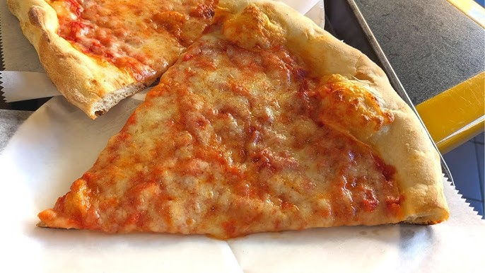
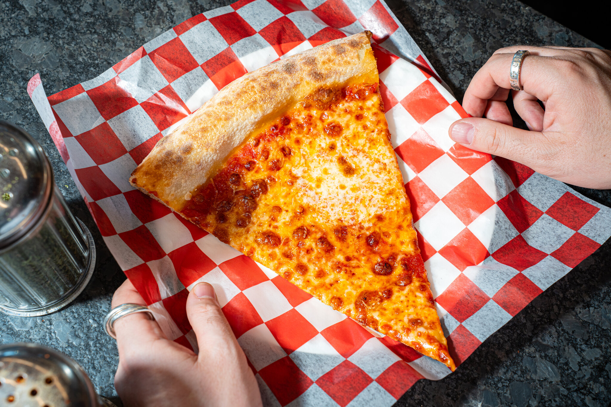
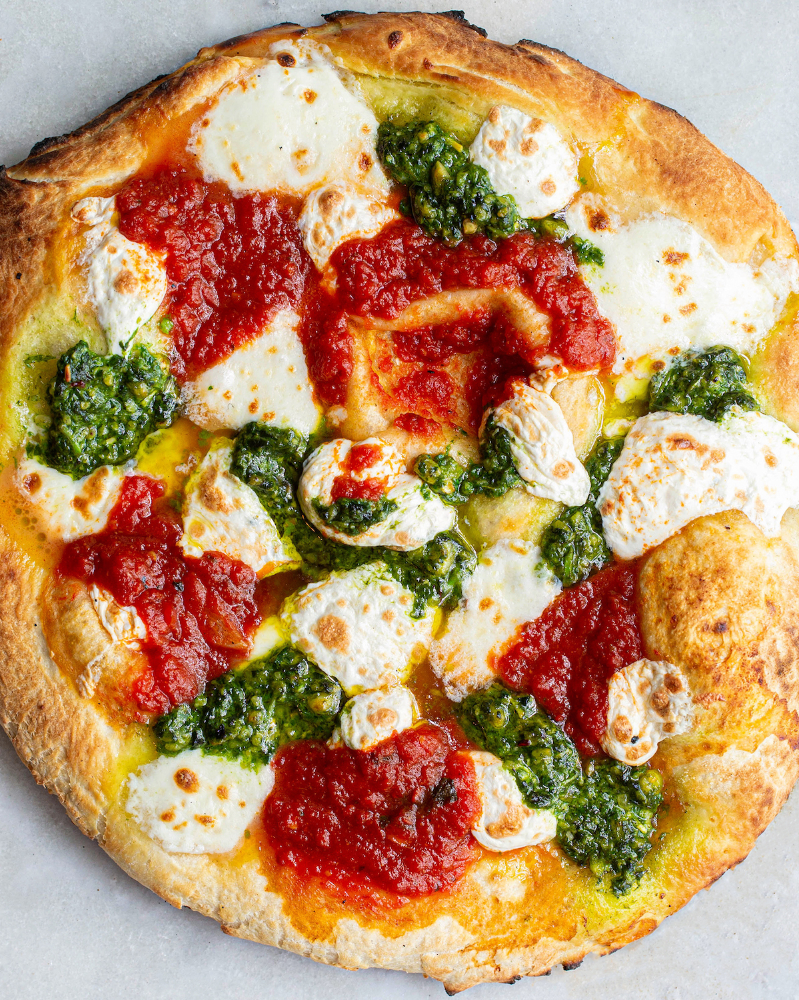
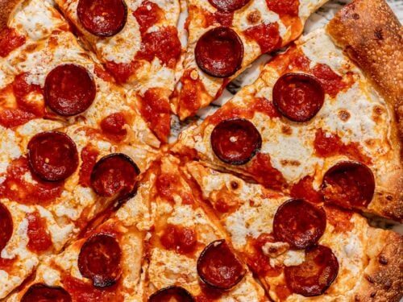
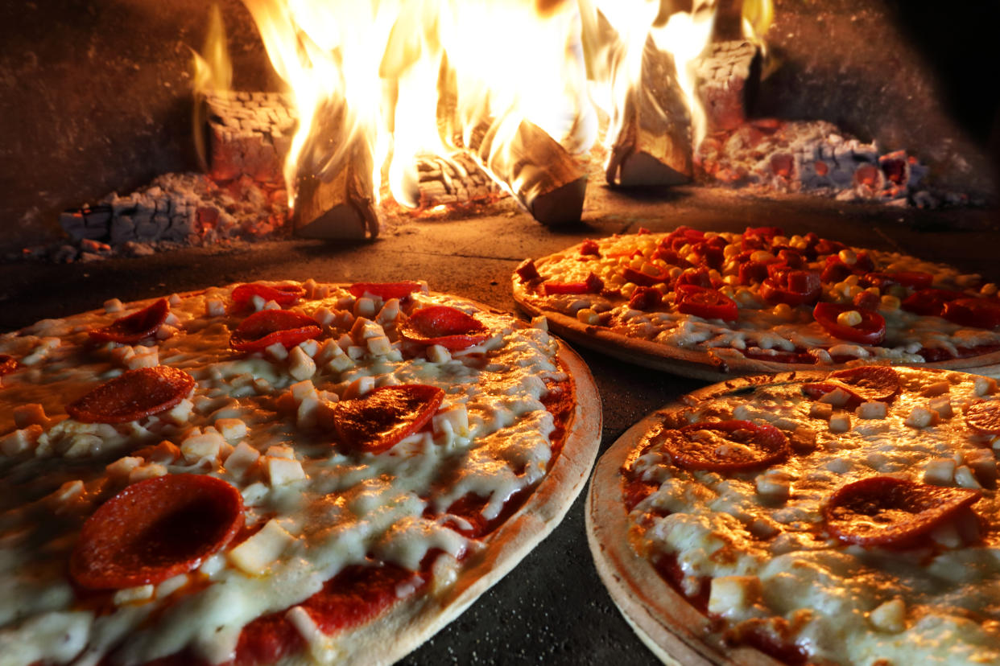
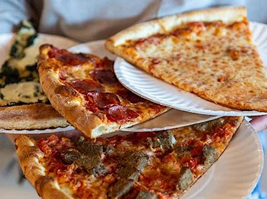

📸 NYC Pizza Gallery







Discover the best slices & pizzerias in the heart of New York City.
New York-style pizza is world-famous for its thin, foldable crust, flavorful tomato sauce, and gooey mozzarella cheese. Many say the secret lies in NYC's water, which gives the dough its distinct texture. Originating from Italian immigrants in the early 1900s, NYC's pizza has become a cultural icon, with thousands of pizzerias serving both traditional and modern slices across the city.
Pizza in NYC is more than just food—it's a cultural experience. Whether it's a quick dollar slice from a street-side joint or a gourmet wood-fired pie at a high-end pizzeria, there's a pizza for everyone in the Big Apple. You can find traditional slice shops, Roman-style pizzas, deep-dish variations, and even creative toppings like truffle oil, hot honey, and even mac & cheese. One of the most unique aspects of NYC pizza culture is the "fold and go" technique. Unlike Chicago's deep-dish pizza, NYC's slices are designed to be eaten on the move—you grab a slice, fold it in half, and enjoy it as you walk through the bustling streets of Manhattan or Brooklyn. It's quick, delicious, and deeply satisfying. NYC's pizza scene continues to evolve while keeping its historic roots intact. Whether you prefer a traditional cheese slice, a Sicilian square, or an artisan Neapolitan pie, there's no denying that New York is the pizza capital of the world. Next time you visit the city, grab a slice, fold it, and experience a true NYC tradition!
🍕 Since: 1905
America's first pizzeria serving classic coal-fired pizza with fresh ingredients.
📍Little Italy
🍕 Since: 1975
Iconic NYC slice shop known for its thin-crust, foldable pizzas.
📍Greenwich Village
🍕 Since: 1965
Legendary Brooklyn pizzeria where every pie is handcrafted by Domenico DeMarco.
📍Brooklyn
🍕 Since: 2008
Trendy Brooklyn pizzeria offering artisanal, wood-fired pizzas.
📍Bushwick